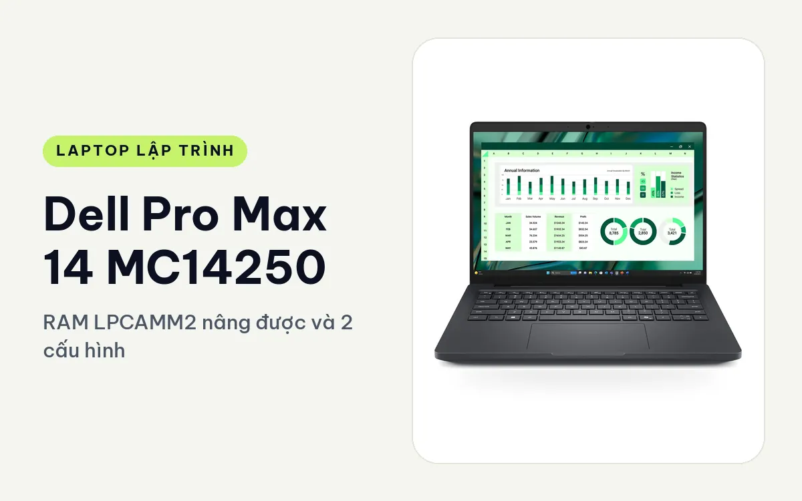
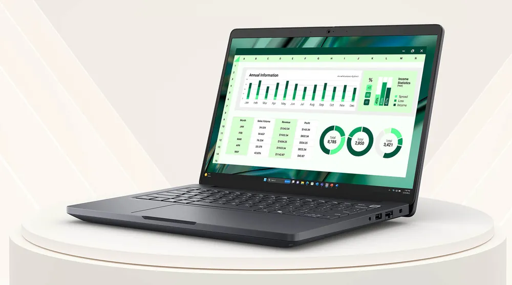
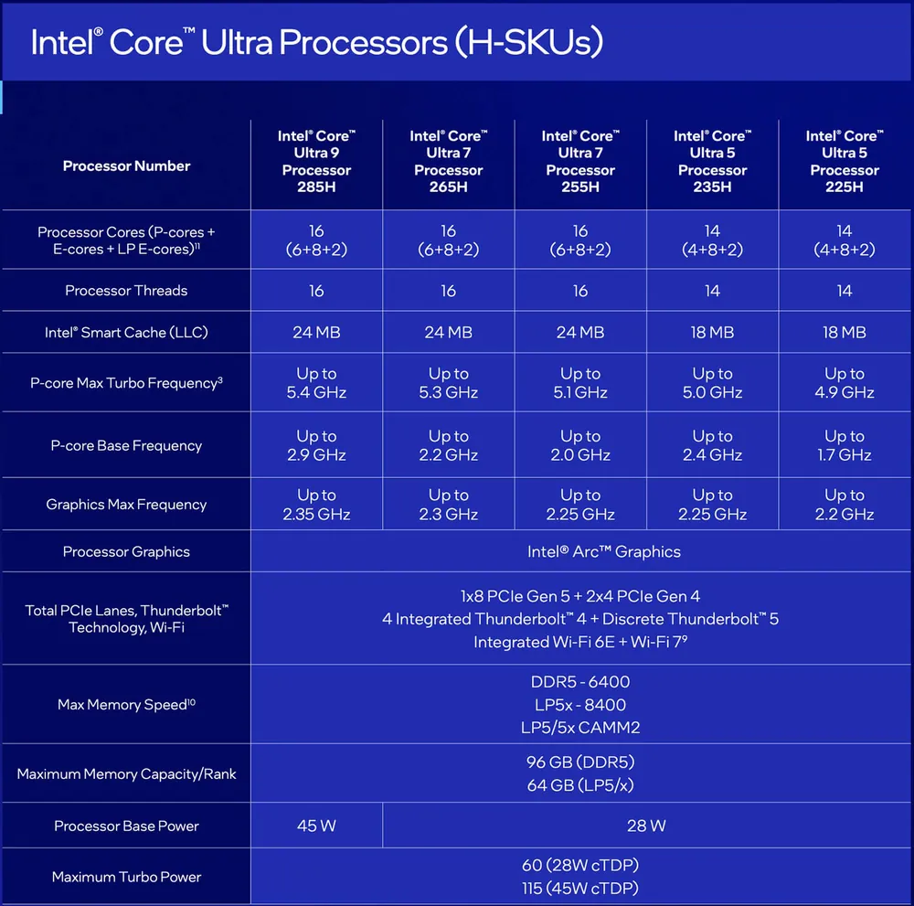
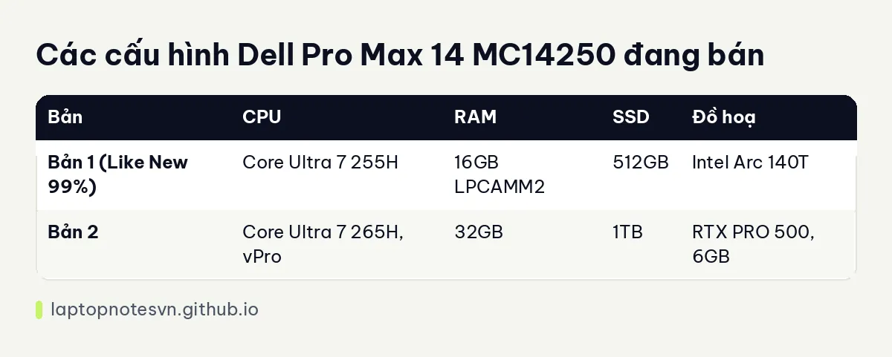

Dell Pro Max 14 MC14250 cho lập trình - RAM LPCAMM2 nâng được và 2 cấu hình

Dell Pro Max 14 MC14250 là máy trạm di động 14 inch của Dell, nằm ở nhánh MC của dòng Pro Max. Nhánh này nặng hơn và dày hơn nhánh Premium MA, đổi lại có RAM LPCAMM2 tháo thay được và cổng mạng RJ45 tốc độ 10Gbps. Bài này nói về hai cấu hình đang bán và kiểu lập trình hợp với từng bản.
Người hợp nhất với máy là dân backend, DevOps và dev làm việc với mạng nội bộ, những người hay cắm dây mạng và cần nâng RAM về sau mà không phải mua máy mới.
Thiết kế, dày hơn nhưng nhiều thứ để thay
Máy dùng khung 14 inch kiểu workstation, độ dày từ 14,79mm đến 24,65mm. Con số dày nhất khá lớn so với ultrabook 14 inch, và đó là cái giá của hệ thống tản nhiệt cùng cổng đầy đủ. Cổng gồm 2 cổng Thunderbolt 4, HDMI 2.1 và RJ45 10Gbps.

Điểm khác biệt đáng nói là RAM LPCAMM2. Đây là module RAM dạng tấm mỏng, tháo ra thay được, nâng được tới 64GB. Phần lớn máy mỏng hiện nay hàn RAM lên bo mạch, nên ở dòng này, dân code có thể mua bản 16GB trước rồi nâng sau.
Với dân code, cổng RJ45 10Gbps có giá trị thực tế khi làm việc với NAS, server dev trong mạng nội bộ hoặc kéo image Docker lớn qua dây. Hai cổng Thunderbolt 4 đủ để cắm màn hình ngoài và ổ đĩa nhanh cùng lúc, còn HDMI 2.1 dùng cho màn hình hoặc máy chiếu khi trình bày. Trang sản phẩm không nêu số cổng USB-A, nên nếu cần cắm nhiều thiết bị cũ thì nên mang theo hub nhỏ.
Mang đi hằng ngày
Máy nặng 1,83kg, pin 72Wh. Trang sản phẩm ghi thời lượng pin khoảng 5 đến 7 giờ tùy tác vụ, thấp hơn các máy 14 inch mỏng nhẹ. Mang đi học hoặc đi làm hằng ngày vẫn được, nhưng cầm lên sẽ thấy nặng hơn rõ so với ultrabook 14 inch, và củ sạc cũng nên mang theo nếu ngồi quán cả buổi.

Nếu phải đi công tác nhiều và cần máy nhẹ, nhánh Premium sẽ hợp hơn, xem bài Dell Pro Max 14 Premium để so sánh.
Có 2 cấu hình
Hai bản khác nhau khá xa về mức cấu hình, một bản thiên về văn phòng và dev nhẹ, một bản thiên về máy trạm có card đồ hoạ rời.

| Bản | CPU | RAM | SSD | Đồ hoạ |
|---|---|---|---|---|
| Bản 1 (Like New 99%) | Core Ultra 7 255H | 16GB LPCAMM2 | 512GB | Intel Arc 140T |
| Bản 2 | Core Ultra 7 265H, vPro | 32GB | 1TB | RTX PRO 500, 6GB |
Bản 1, Core Ultra 7 255H / 16GB / 512GB, Arc 140T
Đây là bản máy cũ đã qua sử dụng, tình trạng Like New 99%. Chip H đủ mạnh cho build dự án vừa, chạy vài container và IDE. Điểm yếu là 16GB RAM: mở Docker, trình duyệt và IDE cùng lúc sẽ chạm trần khá nhanh.
Vì RAM là LPCAMM2 nên người mua có thể nâng sau, và đây là lý do bản này hấp dẫn hơn một bản 16GB hàn chết. Hợp với web full-stack, backend Node hoặc Python, học Java, và những ai tính nâng RAM khi cần.
Nếu máy chủ build nằm ở nơi khác, bản này vẫn đủ để viết code và chạy test, vì ổ 512GB chứa được vài dự án cùng image cần dùng. Khi đầy ổ, bạn sẽ phải dọn image Docker khá thường xuyên.
Bản 2, Core Ultra 7 265H vPro / 32GB / 1TB, RTX PRO 500
Bản này có RTX PRO 500 với 6GB VRAM, là card đồ hoạ chuyên nghiệp mức vào cửa trong dòng RTX PRO. Card đủ để chạy thử mô hình nhỏ có CUDA, dựng 3D nhẹ, hoặc hỗ trợ những phần mềm CAD và đồ hoạ cần driver chứng nhận. Nó không dành cho huấn luyện mô hình lớn, vì 6GB VRAM là giới hạn thật.
32GB RAM và SSD 1TB hợp với backend nhiều dịch vụ, Docker Compose, máy ảo và dữ liệu thử. vPro hợp môi trường doanh nghiệp cần quản lý máy từ xa. Android Studio kèm emulator cũng chạy thoải mái trên bản này. Muốn biết 32GB đã đủ cho bạn chưa thì xem lập trình viên cần bao nhiêu RAM.
Về nhiệt và tiếng quạt, trang sản phẩm không có số đo, nên mình không đưa ra con số. Nếu bạn hay ngồi ở nơi yên tĩnh, nên thử máy trực tiếp khi build nặng để tự đánh giá.
Nên chọn bản nào
Cần tiết kiệm, dự định nâng RAM sau, làm web và backend vừa: chọn bản 1. Làm Docker nhiều, máy ảo, có chạm tới CUDA hoặc đồ hoạ chuyên dụng: chọn bản 2.
Nếu bạn cần màn hình lớn hơn và card mạnh hơn, mời xem Dell Pro Max 16 MC16250, có tới RTX PRO 2000 và pin 96Wh. Còn nếu muốn 14 inch với vỏ nhẹ hơn, màn OLED và Thunderbolt 5, hãy so thêm bản Premium. Bản MC này đáng chọn khi bạn đặt nặng việc nâng RAM và cổng mạng 10Gbps.
Đăng ngày 08/11/2026